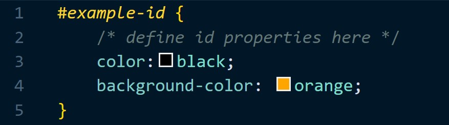

Summarise
What is a selector?
In CSS, we use selectors to target specific HTML elements. There are 3 main selectors; Tag Selectors, ID Selectors, and Class Selectors.
Class and ID Selectors are used to identify HTML elements, ignoring the type of tag. The main benefit of setting class or ID is that you can present the same HTML element differently, depending on its class or ID.
HTML Syntax

id
What is an 'id' selector?
The ID selector matches an element based on the value of its id attribute. Here the id attribute is 'example-id'. In order for the element to be selected, its ID attribute must exactly match the value given in the selector.
CSS Syntax
The '#' symbol and the id of the HTML element name are used to select the desired element. This comes to '#example-id' as the identifier.
class
What is a 'class' selector?
The class selector selects elements with a specific class attribute. Here the class attribute is 'example-class'. It matches ALL the HTML elements based on the contents of their class attribute.
CSS Syntax

The '.' symbol, along with the class name, is used to select the desired class. This comes to '.example-class' as the identifier.
Result
What is this showing?
Here we have an example that shows what will take precedence (class or id) when both selectors are used.

Since the 'class' selector is targeting the 'main' div. The CSS rules will apply to
everything. This is shown by the
"CSS Concepts" and
"This is an example of a CLASS selector" having the same rules.
The ID on the other hand, overwrites the class rules and applies its own ID specified
CSS rules
Thank you Google